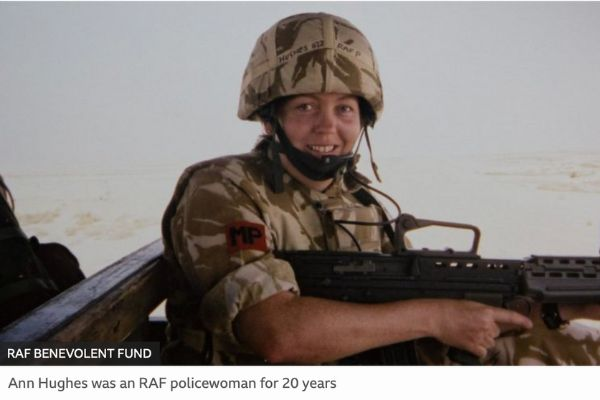
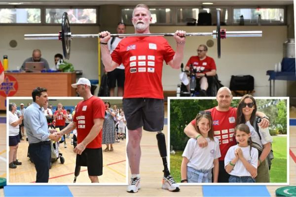
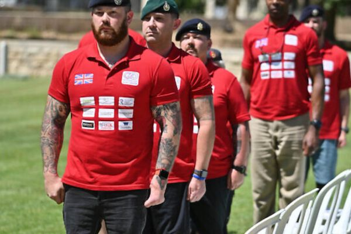
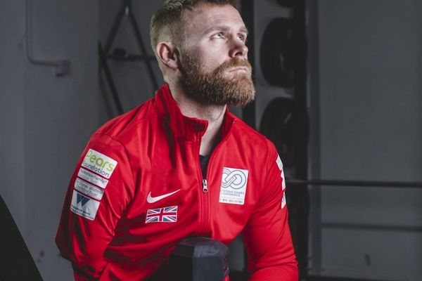

Archive
Press coverage, news and letters from the 2019, 2022 and 2023 Games.
In the press
 Jewish News
Jewish News“It’s changed my life”: British and Overseas veterans compete at inspirational Veteran Games
Over 60 British veterans travelled with their families to participate in the Veteran Games.
 Forces News
Forces NewsJohnny Mercer praises wounded veterans competing at Veteran Games
Minister for Veterans' Affairs Johnny Mercer, an ex-Army Captain, was present at the event on the first day of competition where he presented medals to some athletes.
 The Independent
The IndependentI cage fight to relax and was a Royal Marine Commando – but this is my biggest fear
A Veteran Games featured insight into mental health and depression.

BBC NewsEx-RAF policewoman with MS to compete at Veteran Games
Ann Hughes, from Shifnal in Shropshire, was among 65 British wounded, sick and injured armed forces veterans at the event.
- Daily Mail (video)
Veteran Games brings soldiers together
Daily Mail video reel on Facebook Watch.

The Sun“Changed my life”: inside the Veterans Games where injured heroes compete against other soldiers to help with their recovery
Former Royal Marine commando Mitchell Singleton, 59, who served in the Falklands War, knew he had come a long way in his recovery.
News

“Competing gave me back my pride”
Britain’s veterans minister hailed the way Israel honours its military veterans as injured UK servicemen and women spoke of how the Games had transformed their lives.

“After the Veteran Games, I feel I can achieve anything”
Heroes of the third Veteran Games returned to the UK with tales of “miracles” after a week of building confidence, enhancing family bonds and making lifelong friends.

UK veterans travel for Veteran Games
65 British wounded, sick and injured Armed Forces veterans travel with their families to compete with counterparts battling identical challenges.
Letters from participants
Letters written to the team by veterans, families and partners after the Games.
- Jonathan
I want to thank you from the bottom of my heart for organising and delivering the second Veteran Games and Conference, and for welcoming me to them with Jane.
- Michael and Nicola
Thank you from the bottom of our hearts for the incredible week that you hosted for the UK Veterans. The visit surpassed any expectations we held.
- Helen
I just wanted to drop a line to congratulate you all on such a fantastic week and to say a huge thank you to each of you.
- Pete
Wanted to send you a heartfelt thank you from my family and I for this week. It has been such an experience we will not forget!
- Alistair
Congratulations and thank you for delivering the awesome Veteran Games 2022; your passion and dedication shone through.
- Carra, Stuart, Sophie & Ben
I want to personally thank you from the bottom of my heart for what this trip has done for myself and my family.
- Jason
The trip was by far one of the best experiences I have ever been on, especially as I was able to be with my youngest daughter.
- Anthony
I would like to start by thanking you, the entire team and the sponsors for the outstanding work you do for veteran communities.
- Steve
Please accept my personal thanks and that of my fellow Royal Marines for all your extraordinary hard work and good humour. Your vision is delivering in spades.
What people said
“I think that this week has brought people together and allowed that osmosis of knowledge and experience sharing so people know that they aren’t alone.”
“In our effort to provide a global gold standard there are definitely insights to be gained from the first-class provisions available.”
“It’s taken me a while to digest all your kindness. I cannot thank you and everyone involved enough. I have hope again. I have found a new strength. You and the team made this happen. I have found my smile again. Thank you so much.”
“Veteran Games is a world leader and will benefit our veterans immensely. I have returned reinvigorated and ready to continue my own rehab as have many others.”
“When I arrived, I was a shell of the person I am now, I just hope I can take it forward. It’s down to the amazing support we’ve received and being part of a community again, like when we served.”
“It was truly inspiring to meet other veterans and humbling to learn about their experiences. Everyone had different abilities – there were people in wheelchairs, those who were blind or had other disabilities. But there was a real sense of pride in what they were doing, and they all refused to give up.”
“These games, these amazing veterans’ games do just that. They restore the pride we once felt when we wore our military uniforms. That pride we once had, being part of a troop, a detachment, a Corps. They give us the opportunity to create new friendships; they give us understanding of what other veterans in other countries have experienced, and how they have been supported in their rehabilitation. They give us the chance to meet with each other’s families in a safe, friendly space to talk about the challenges we all face and how we can continue to support each other. And they give us wonderful, lifelong memories.”